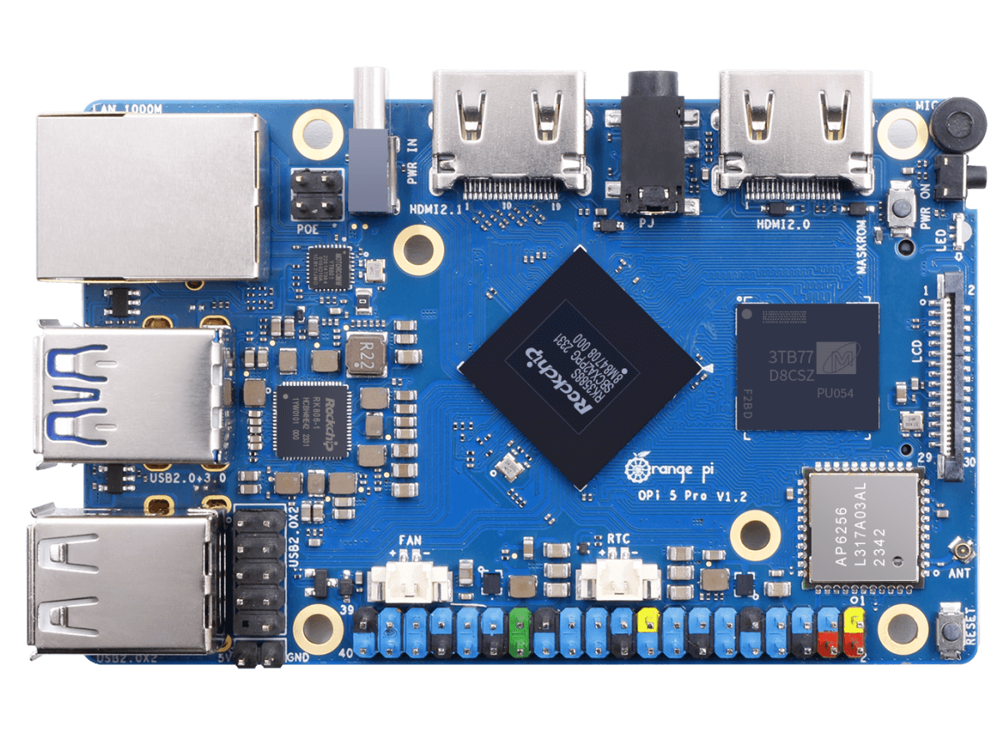

Orange Pi 5 Pro
Warning
The board support for this device is experimental. Not all features are implemented and they have not been extensively tested by many users.
Help is wanted if you are interested in supporting a feature or if you’ve found an issue with any of the implementation! See the contributing guidelines.

Orange Pi 5 Pro Single Board Computer
The Orange Pi 5 Pro is an ARM64 single-board computer based on the Rockchip RK3588S SoC, created by Shenzhen Xunlong Software.
Features
SoC: Rockchip RK3588S (8 nm LP process)
CPU: Octa-core 64-bit (4x Cortex-A76 up to 2.4 GHz + 4x Cortex-A55 up to 1.8 GHz)
GPU: ARM Mali-G610 MP4 (Supports OpenGL ES 1.1/2.0/3.2, OpenCL 2.2, Vulkan 1.2)
NPU: Up to 6 TOPS AI accelerator
RAM: 4/8/16 GB LPDDR5
Storage: eMMC module socket, SPI Flash, MicroSD slot, M.2 M-Key (NVMe/SATA)
Ethernet: Gigabit Ethernet (YT8531C PHY) with PoE+ support (requires PoE+ HAT)
Wi-Fi/Bluetooth: Onboard AP6256 module (Wi-Fi 5 802.11ac + Bluetooth 5.0 / BLE)
USB: 1x USB 3.1 Gen1, 3x USB 2.0 (via onboard USB Hub)
Video Output: HDMI 2.1 (up to 8K @ 60 Hz)
Camera: 2x MIPI CSI 4-lane
Expansion: 40-pin header (UART, PWM, I2C, SPI, CAN, GPIO)
Power Supply: Type-C (5 V @ 5 A)
Dimensions: 89 mm x 56 mm
NuttX Support Status
The initial port supports the core system components, interactive shell, and basic utilities:
Core Boot: Switch from EL2 to EL1, translation tables, and MMU enablement.
System Console: 16550 UART driver operating on UART2.
Timer: ARM generic system timer.
PSCI: System reset / reboot via TF-A PSCI SMC calls.
procfs: Virtual process filesystem.
Other onboard peripherals (GPIO, SPI, I2C, eMMC, USB, Ethernet, Wi-Fi, Bluetooth, HDMI, and MIPI DSI/CSI) are currently not supported in this port.
Note
To see support status for SoC peripherals (I2C, SPI, UART, etc.), see the RK3588 page.
Pin Mapping
Debug Serial Console
The debug serial console inherits UART2 from the firmware. The default pin mapping for the UART2 console on the 40-pin expansion header is:
Pin |
Signal |
Notes |
|---|---|---|
8 |
UART2_TX |
Debug UART Transmit (UART2_TXD_M0) |
10 |
UART2_RX |
Debug UART Receive (UART2_RXD_M0) |
6 |
Ground |
Ground |
Power Supply
The board is powered via a Type-C connector. A high-quality power supply providing 5 V @ 5 A is recommended.
Installation
Install an aarch64-none-elf bare-metal toolchain and ensure its
bin directory is on your PATH.
One option is the Arm GNU Toolchain.
Building NuttX
To build NuttX for the Orange Pi 5 Pro, configure the board first:
$ ./tools/configure.sh orangepi-5-pro:nsh
$ make -j$(nproc) CROSSDEV=aarch64-none-elf-
A successful build produces nuttx and nuttx.bin.
Booting
Firmware and Relocation
The Orange Pi 5 Pro boots via U-Boot. A typical boot flow is:
BootROM -> DDR initialization/TPL -> U-Boot SPL -> TF-A BL31 -> U-Boot proper -> NuttX
The port relies on the existing firmware for DRAM training, boot media
access, TF-A loading, and the debug UART’s clock and pin configuration.
TF-A provides the PSCI interface used by NuttX. U-Boot loads
nuttx.bin and transfers control with the MMU and data cache disabled.
Although the physical DRAM starts at 0x00000000, the first 28 MiB (up to 0x01c00000)
is reserved by the firmware (TF-A, OP-TEE, U-Boot). U-Boot reports the start of available
RAM as 0x01c00000. The NuttX ARM64 startup code uses a standard image load offset of
0x480000 (4.5 MiB). U-Boot’s booti command parses this offset from the Image header
and relocates the binary to 0x02080000 (CONFIG_RAM_START).
The initial port maps a 512 MiB RAM window beginning at 0x02080000. Memory outside this
window is not included in the NuttX heap. The initial MMU configuration uses a 40-bit physical
address size.
Boot Procedure
Follow these steps to boot NuttX:
Format a microSD card with a single FAT32 partition.
Copy
nuttx.binto the root of the microSD card.The board DTB is typically already present on the microSD card boot partition (e.g. from a vendor OS image) at /boot/dtb/rockchip/rk3588s-orangepi-5-pro.dtb. If not, copy it to the card.
Insert the card and connect the 3.3 V debug serial cable.
Stop at the U-Boot prompt and run:
=> load mmc <dev>:1 0x02000000 /nuttx.bin => load mmc <dev>:1 ${fdt_addr_r} /boot/dtb/rockchip/rk3588s-orangepi-5-pro.dtb => booti 0x02000000 - ${fdt_addr_r}
Confirm the board reaches the NuttX prompt:
NuttShell (NSH) NuttX-13.x nsh>
The initial port does not consume the DTB passed by U-Boot. This procedure
has been validated on a 4 GiB Orange Pi 5 Pro. The observed handoff
relocated the image to 0x02080000, entered NuttX at EL2, switched to
EL1, and reached the NSH prompt.
Configurations
You can configure NuttX for the Orange Pi 5 Pro using the following command:
$ ./tools/configure.sh orangepi-5-pro:<config>
Where <config> is one of the configurations listed below.
nsh
Interactive NSH configuration for initial board validation. Connect the 3.3 V debug UART at 1500000 baud to access the NuttShell prompt.
ostest
Boots directly into ostest_main for scheduler and OS regression
tests.
Hardware validation
The nsh configuration was tested on a 4 GiB Orange Pi 5 Pro. UART2
transmit and receive, procfs, the ARM generic timer and PSCI reset were
verified. A five-second sleep advanced /proc/uptime by five
seconds, and reboot returned control to U-Boot.
The ostest configuration was also run on the same board and completed
with status zero. calib_udelay measured 116422 delay loops per
millisecond with an R-squared value of 1.0000.
References
Rockchip RK3588 Brief Datasheet: https://www.rock-chips.com/uploads/pdf/2022.8.26/192/RK3588%20Brief%20Datasheet.pdf
Linux RK3588 device tree: https://git.kernel.org/pub/scm/linux/kernel/git/torvalds/linux.git/tree/arch/arm64/boot/dts/rockchip/rk3588-base.dtsi
U-Boot Rockchip documentation: https://docs.u-boot.org/en/latest/board/rockchip/rockchip.html